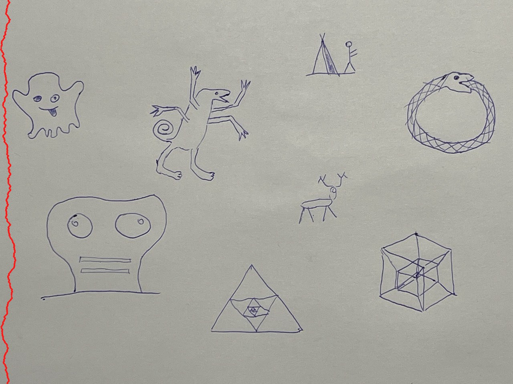
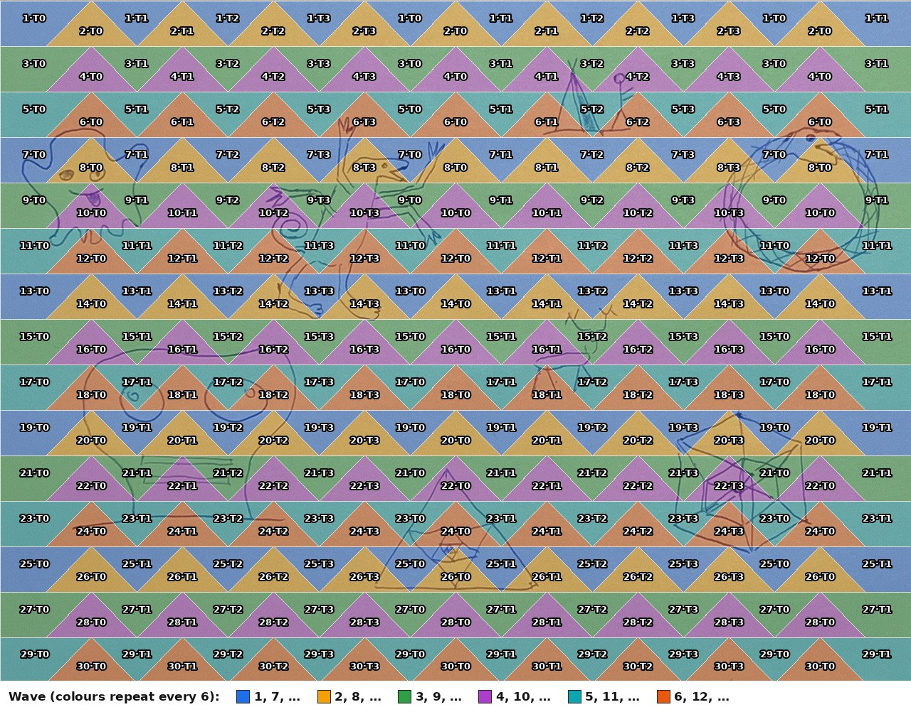
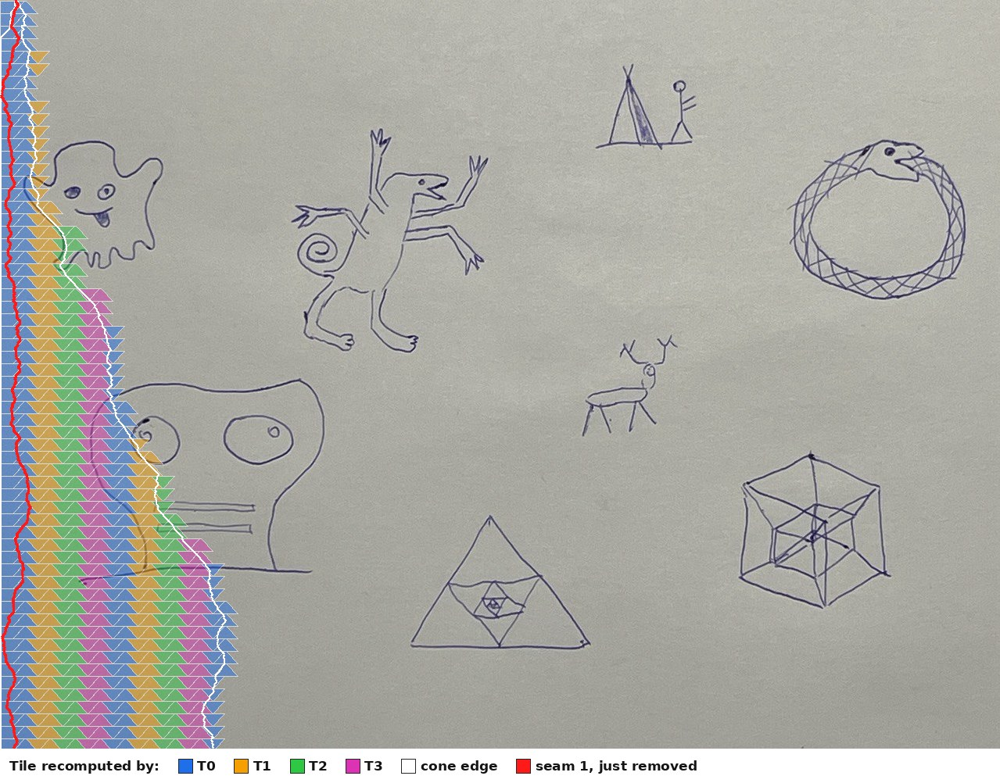
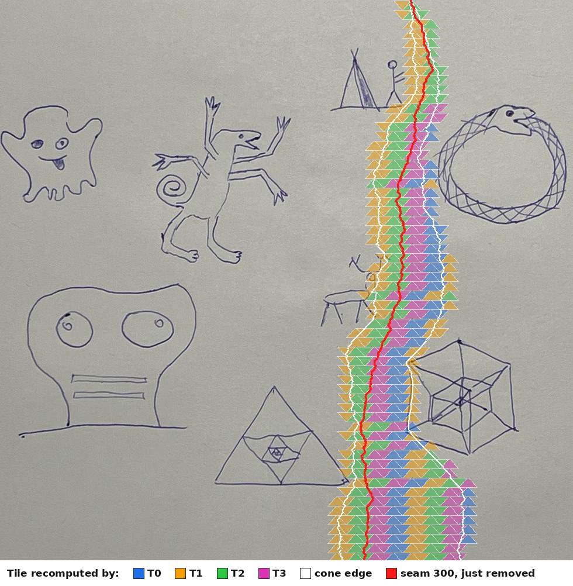
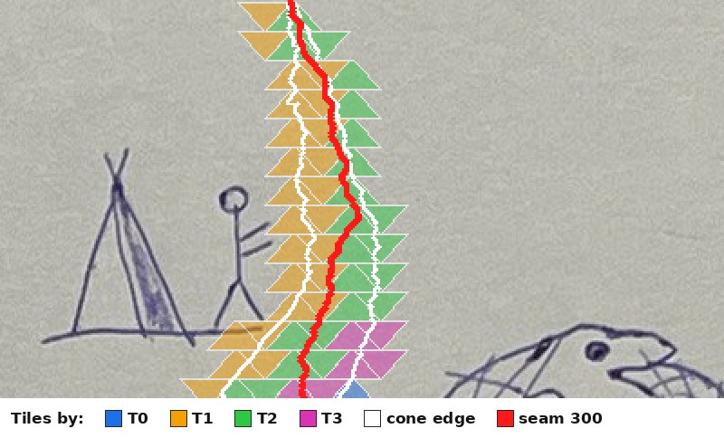

Parallel seam carving: threads, the GPU, and the browser
How the two parallel engines of the seam carver page split one seam's work:
C++ on threads (parallel_seam_carver/tiled_seam_carver.hpp, compiled to multithreaded
WebAssembly) and WebGPU (the same algorithm as compute shaders, driven from JavaScript or from
C++). Also covered: how the threads synchronize, what the page's main thread does meanwhile, how the
build turns all of it into one HTML file, and the workaround that makes threads possible there.
All pictures are computed from the engines themselves, on the sample picture
tundra_1280x958.jpeg; the numbers come from the measurements in the commit messages.
1. The work: one row after another
Removing one seam takes three steps:
- Path costs. Every pixel gets the cost of the cheapest path from the top row down to it: the cheapest of its three parents (up-left, up, up-right) plus the colour distance to that parent. It also remembers which parent won.
- Trace. The cheapest pixel of the bottom row, then its parents back to the top: the seam.
- Shift. Every row moves its pixels right of the seam one column left.
Step 1 is nearly all the work: about 1.2 million cells for the full 1280 × 958 picture. A cell needs the row above it to be finished, so rows can't be computed side by side. Only the cells within a row are independent.

2. Splitting a full recompute into triangles
Synchronizing all threads after every row would cost a barrier per row, 957 per seam. Triangle
tiling needs far fewer. Rows are grouped into strips of base / 2 rows, and each strip is
computed in two waves:
- Wave A, downward triangles. Each thread takes a segment of
basecolumns from the row above the strip and fills a triangle below it, one column narrower on each side per row. Every cell's three parents lie inside its own triangle or in the finished row above. - Wave B, upward triangles. The gaps between the downward triangles are upward triangles. Their sides read the downward triangles, which are finished by now.
A barrier ends each wave, so a strip costs two barriers instead of base / 2.
base 8. Each colour is a wave, T0/T1 the thread
that computes the tile, and the red cell shows the three parents every cell reads.On the sample picture with base 128, a strip is 64 rows high and 10 segments wide. 15 strips make
30 waves, and with them 34 barriers per seam: 2 per strip, plus 4 around the top row, the trace,
the shift and the width update. The four threads take tiles round-robin:

wave·thread: wave 1 is the downward triangles of the
first strip, wave 2 the upward ones between them, and so on down. Colours repeat every six waves.3. Incremental updates: only the cone
Most of a full recompute repeats the previous seam's work. After a seam is removed, the costs and parents shift left together with the pixels, and nearly all of them are still right. A cell can only change in two cases:
- Its parents moved. These "seeds" are the cells next to the removed seam, a few in each row.
- A parent's cost changed. Changes spread down from the seeds by at most one column per row on each side, so the changed cells form a cone around the removed seam that widens downward.
On the sample picture the cone averages 125 columns: about 21 near the top and 225 near the bottom. That is 13% of the cells a full recompute evaluates.
The parallel engines cover the cone with a finer tiling, base 32: strips 16 rows high, 120 waves
per seam. A tile is dirty if it holds a seed or reads a cell whose cost changed in this seam.
Only dirty tiles are recomputed, and each recomputed cell whose cost changes is marked with the
seam's number (its epoch), so the next tiles' dirty tests can see it. A clean tile's inputs are
unchanged, so its stored costs are still exactly what a full recompute would produce. That keeps
the results bit-identical to the single-threaded core.



The split across threads is uneven: after seam 1, threads 0 to 3 recomputed 203, 147, 124 and 108 tiles. Each strip deals out its candidate tiles round-robin, starting with thread 0, and near the top a strip has only one or two. Even so, tiles 32 wide recompute only 16% of a full recompute, 1.21 times the core's own incremental update.
| 600 seams of the sample picture | time |
|---|---|
| Single-threaded core, incremental (4-core Linux VM, native) | 1646 ms |
| Threads, full recompute, 4 threads | 2200 ms |
| Threads, incremental dirty tiles, 4 threads | 635 ms |
| Core in WebAssembly, incremental (Chromium, 2 cores) | 3.39 s |
| Threads in WebAssembly, incremental, 2 threads (Chromium, 2 cores) | 2.14 s |
4. How the threads synchronize
All threads run the same loop over waves. Between waves they meet at a barrier, a counter and a phase number in shared memory:
void arrive_and_wait() {
const int phase = phase_.load(std::memory_order_acquire);
if (arrived_.fetch_add(1, std::memory_order_acq_rel) + 1 == count_) {
arrived_.store(0, std::memory_order_relaxed); // last to arrive: reset,
phase_.store(phase + 1, std::memory_order_release); // open the next phase,
wake_all(); // wake the sleepers
return;
}
for (int i = 0; i < spins_; ++i) // spin a while...
if (phase_.load(std::memory_order_acquire) != phase) return;
while (phase_.load(std::memory_order_acquire) == phase) // ...then sleep:
sleep_while(phase); // Atomics.wait in wasm
}
- Visibility. The release store of the new phase and the acquire loads that see it make every cell written before the barrier visible to every thread after it.
- Spin, then sleep. An incremental wave holds only microseconds of work, so waking a sleeping
thread can cost more than the wave itself. Threads first check the phase up to 100,000 times
(about 50 µs) when every thread has a core of its own. When there are more threads than cores,
they check only 1,000 times, so that waiting threads don't take the CPU from working ones.
?spins=Nin the page's address overrides this. - Why not
std::barrier. In WebAssembly it spins for up to about 64 µs and asks JavaScript for the time while doing so. With 8 threads on 2 cores it took 2.5 times as long as 2 threads; with this barrier, about as long.
shrink 10 seams, over time. The threads finish each wave at different times, wait
at the barrier (spin, then sleep) and continue together. The page's main thread only sends the
request and handles the reply.What the page's main thread does meanwhile
Nothing that blocks:
- The page splits a shrink into steps of 10 seams.
- For each step it posts a message to a dedicated Web Worker that hosts the WebAssembly module.
That worker calls
shrink_horizontally()and works as thread 0. The other threads are the module's own workers, started together with the module. - The main thread returns to its event loop at once. It keeps drawing frames and handling input, and awaits the reply as a promise.
- When the reply arrives, it repaints the picture and sends the next step.
Earlier versions ran thread 0 on the main thread itself. A browser's main thread may not sleep, so Emscripten made it spin at every barrier. That burned a core the other threads needed and froze the page for a whole step: frame gaps of about 1 s on 2 cores, against about 20 ms now.
The WebGPU engines also leave the main thread free. It records and submits the GPU commands for a
step, which takes a few milliseconds, then awaits onSubmittedWorkDone() while the GPU works.
5. A graphics API for general computation: WebGPU
WebGPU exposes the GPU's compute pipelines next to its graphics ones. A compute pipeline runs a function written in WGSL, the shader, over a grid of workgroups. Each workgroup is a group of invocations that run together, can share fast memory and can wait for each other at barriers. Workgroups can't wait for each other. Only the order of dispatches separates their work.
That maps onto the tiling directly:
| Seam carving | WebGPU |
|---|---|
| a wave (all triangles of one kind in a strip) | one dispatchWorkgroups() |
| a triangle tile | one workgroup |
| a column of the tile | one invocation |
| the rows inside a tile | a loop, with storageBarrier() between rows |
| the barrier between waves | the boundary between two dispatches |
storageBarrier() before the next row.The shader for wave A, from webgpu_seam_carver.js:
@compute @workgroup_size(BASE)
fn downward_triangles(@builtin(workgroup_id) group: vec3u,
@builtin(local_invocation_index) local: u32) {
let w = uniform_width(local);
let segments = (w + BASE - 1u) / BASE;
let i = group.x;
if (i >= segments) {
return;
}
let a = i * BASE;
let x = a + local;
for (var k = 1u; k <= params.rows; k++) {
let lo = select(a + k, 0u, i == 0u);
let hi = select(a + BASE - k, w, i == segments - 1u);
if (x >= lo && x < hi) {
relax(x, params.r0 + k, w); // best of 3 parents: one cell's cost and parent
}
storageBarrier();
}
}
The program on the CPU only prepares and orders this work:
webgpu.h, which
Emdawnwebgpu turns into JavaScript WebGPU calls.How it differs from the threads:
- No f64. WGSL has no 64-bit floats, so costs are f32. The colour distance comes from a table of f32 square roots, and f32 additions are correctly rounded, so every run is exact for f32. Near-ties that f64 separates can still pick other seams: on the sample picture the first seam already differs in 124 of its 958 rows, at an equal cost.
- Incremental, with wide tiles. Every tile of a wave is launched, and a clean one tests itself
and returns at once. A GPU computes all tiles of a wave together, and every seam still walks all
958 rows in sequence, so narrow tiles would only add dispatches. The default tile stays 256 wide,
the same passes as a full recompute;
?tile=Ntries others.
6. The build: C++ to WebAssembly to one HTML file
wasm_seam_carver/build.sh runs three em++ commands and a Python inline step. The Pages
workflow installs Emscripten 6.0.3, runs the script and publishes the page with its service
worker.| Module | Sources | Notable flags |
|---|---|---|
seam_carver_wasm.js |
seam_carver_core/, embind bindings |
-sSINGLE_FILE (the wasm inside the JS), -fwasm-exceptions |
tiled_seam_carver_wasm.js |
tiled_seam_carver.hpp, bindings |
-pthread, -sPTHREAD_POOL_SIZE=Module.poolSize…, -sINCOMING_MODULE_JS_API=mainScriptUrlOrBlob,… |
webgpu_seam_carver_cpp.js |
webgpu_seam_carver_cpp.cpp |
--use-port=emdawnwebgpu: webgpu.h from the Dawn release this Emscripten pins |
- Single source for WGSL. The shader code lives only in
webgpu_seam_carver.js.build.shextracts it into a C++ raw string literal (build/seam_carver_wgsl.inc) for the C++ engine. - Embedding. The inline step fills the
@@placeholders@@ofseam_carver.template.htmlwith the three modules, the JavaScript engines, the worker script and the sample picture. It first escapes every closing script tag inside them, which would end the inline script early. The threaded module goes in twice, as code and as text (a<script type="text/plain">), because its workers must start from a Blob of that text. - One file. The result opens straight from disk. Only the threads need a web server, for the reason below.
7. Note: the workaround that unlocks threads in the browser
WebAssembly threads share one SharedArrayBuffer as memory. Browsers only allow that on
cross-origin isolated pages, which a server marks with two response headers:
Cross-Origin-Opener-Policy: same-origin and Cross-Origin-Embedder-Policy: require-corp.
GitHub Pages can't send custom headers, and a page opened from disk gets none. The page works
around this in four steps:
- A service worker adds the headers. On the first visit the page registers
isolation_service_worker.js, waits for it to take control and reloads once. From then on the worker answers the page's own navigations, passing the server's response through with the two headers added. The page then reportscrossOriginIsolated. A per-tab flag prevents a reload loop in browsers that ignore the headers. From disk no service worker is possible, so the threads engine stays off and says why. - The module runs in a dedicated worker. There, the calling thread may sleep at barriers instead of spinning on the main thread (section 4).
- The thread pool starts with the module. Starting a thread needs the event loop of the
thread that starts it, and that one is busy while seams are removed. So
PTHREAD_POOL_SIZEstarts all workers up front, sized by the page withModule.poolSize. - The workers start from a Blob. They run the module's own script, which only exists inline
in the page. The page passes a Blob URL of its text as
mainScriptUrlOrBlob. Emscripten 6 ignores that option unless the build lists it inINCOMING_MODULE_JS_API; without it, the workers started the host worker's script and the page hung while loading.